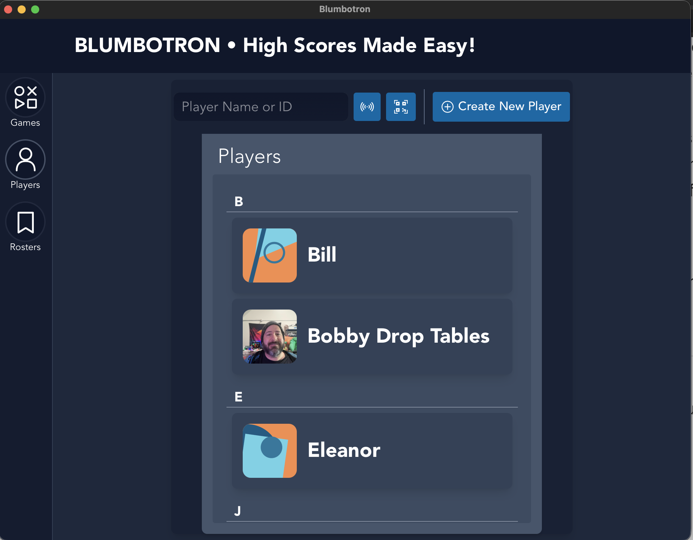
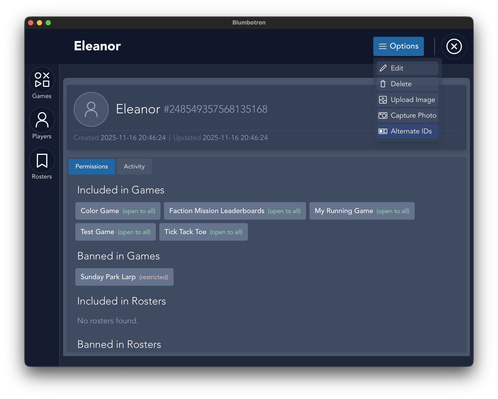
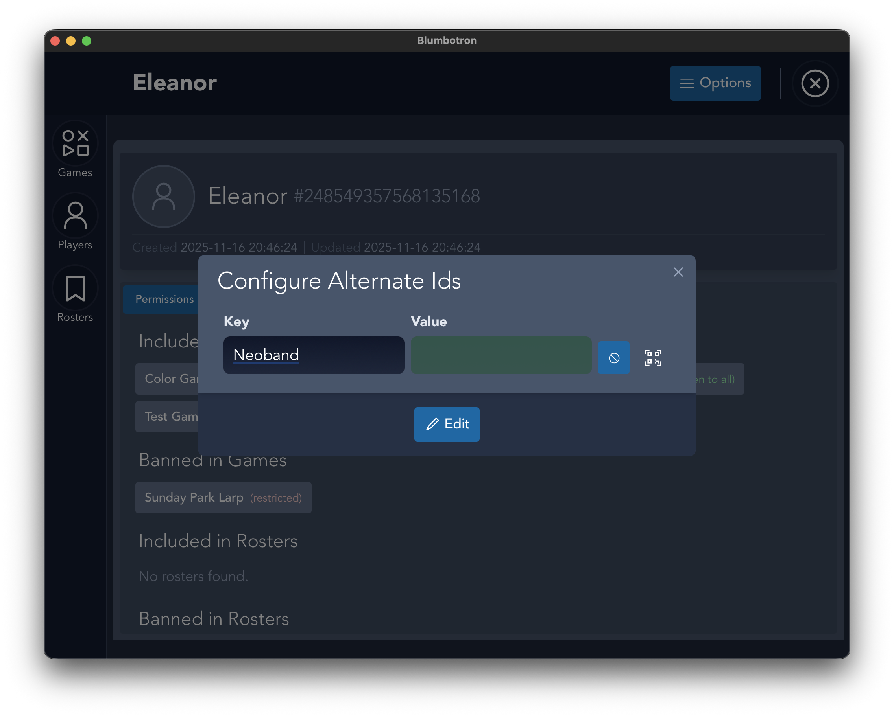
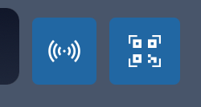
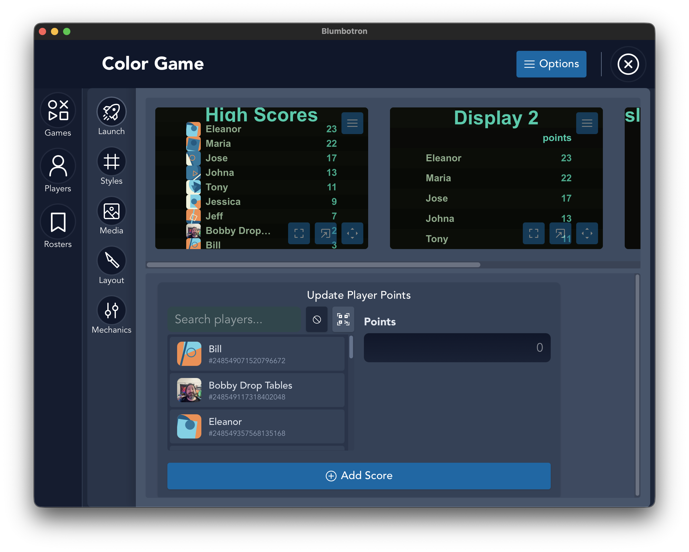

RFID Setup Guide
How to use RFID badges for quick player identification and score entry
← Back to DocumentationHow to Use RFID in Blumbotron
Blumbotron supports RFID badge scanning for fast player identification. Assign an RFID tag to each player once, then scan badges to quickly select players during score entry. This guide walks through the full setup.
Requirements: You will need a USB RFID reader that presents as a keyboard input device (HID). Most inexpensive USB RFID readers work this way out of the box.
Select a Player
Click on the Players icon in the left menu, then select the player you want to assign an RFID badge to.

Open Alternate IDs
On the Player Info screen, click Options in the upper right hand corner, then select Alternate IDs.

Add an RFID Alternate ID
You are presented with a modal that allows you to add alternate IDs. Create a label for this ID (e.g. "Badge 1"), then click the RFID icon.
You will see both an RFID icon and a QR code icon. The input field will glow green when the RFID mode is active. Scan the RFID badge while the field is green to capture the tag ID.

Verify the Alternate ID
Once completed, you will see the alternate IDs listed on the player screen underneath their name and their Blumbotron instance ID.

Use RFID for Score Entry
On the game screen, in the Update Player Points section, you will see the same RFID and QR code buttons. To select a player for scoring, click the RFID button and scan the badge when the input field is green.
The player will be automatically selected and you can immediately enter their score.

Tip: RFID scanning also works alongside QR codes. You can mix and match identification methods across your player base — some players can use badges while others use QR codes.